第 12 讲：实时渲染中的光线追踪——时域复用与降噪
用运动向量把上一帧的结果搬到这一帧，用极低采样率换高质量画面
◆ 学完这一讲，你应该能
理解实时渲染中光线追踪（RTRT）为什么必须依赖降噪（denoising）
掌握运动向量（motion vector）与反投影（back projection）的计算方法
理解时域累积（temporal accumulation）的公式与 α 参数的作用
能列举时域复用的典型失效场景（切换场景、遮挡、反射/阴影滞后）及缓解手段
了解 G-Buffer 在时域与空域降噪中的作用
核心结论速记
实时渲染中光线追踪每像素采样数（SPP）极低，结果噪声极大，必须降噪。
工业界降噪的核心是时域复用：用运动向量找到当前像素在上一帧的位置，把上一帧已降噪的结果按 α 混合进来。
时域复用的本质是提高有效采样率（SPP），相当于把多帧的样本累积起来。
反投影需要世界坐标或深度+运动向量，把当前帧像素映射回上一帧屏幕位置。
时域复用会失效：切换场景、屏幕空间外信息、遮挡/新出现背景、阴影/反射的运动与物体不一致。
失效时盲目复用会导致滞后（lagging），常用钳制（clamping）、检测（detection）和调整 α 来缓解，但会重新引入噪声。
时域累积思想来自 TAA（时域抗锯齿），二者非常相似。
空域降噪（如联合双边滤波、SVGF）将在下一讲展开，与时域结合使用。
011. 为什么实时渲染需要光线追踪降噪
实时渲染中，光线追踪（Ray Tracing）每帧能发射的光线数量极其有限。课件指出，即使是最先进的 GPU，在实时应用中每像素每帧也只能承担大约 1 个采样（1 SPP）。用 1 SPP 做路径追踪（path tracing），得到的图像噪声极大，几乎不可用。
因此，实时渲染中的光线追踪必须配合降噪（denoising）技术：先以极低采样率渲染出带噪声的图像，再用图像处理的方法把噪声去掉。降噪的目标是在质量（不模糊、不产生伪影、保留细节）和速度（每帧降噪耗时小于几毫秒）之间取得平衡。
课件提到，降噪方法大致分为几类：剪切滤波系列（SF、AAF、FSF、MAAF 等）、离线滤波方法（IPP、BM3D、APR 等）、深度学习系列（CNN、Autoencoder 等）。但工业界最主流、最有效的方案是时域复用（temporal reuse）。
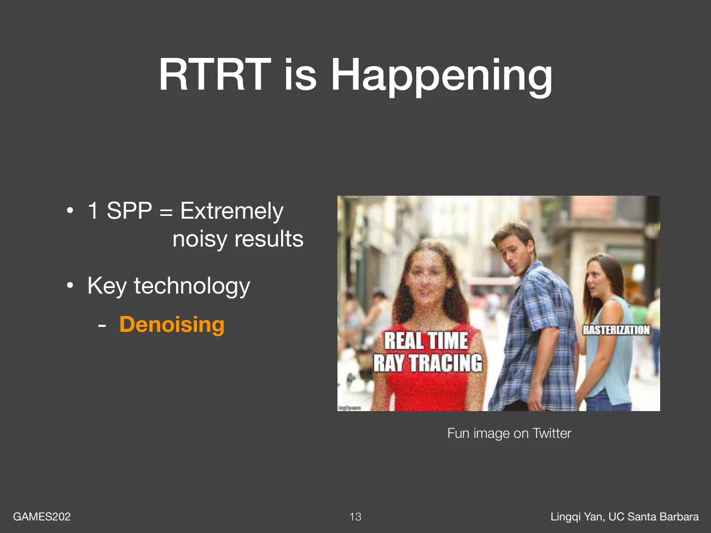
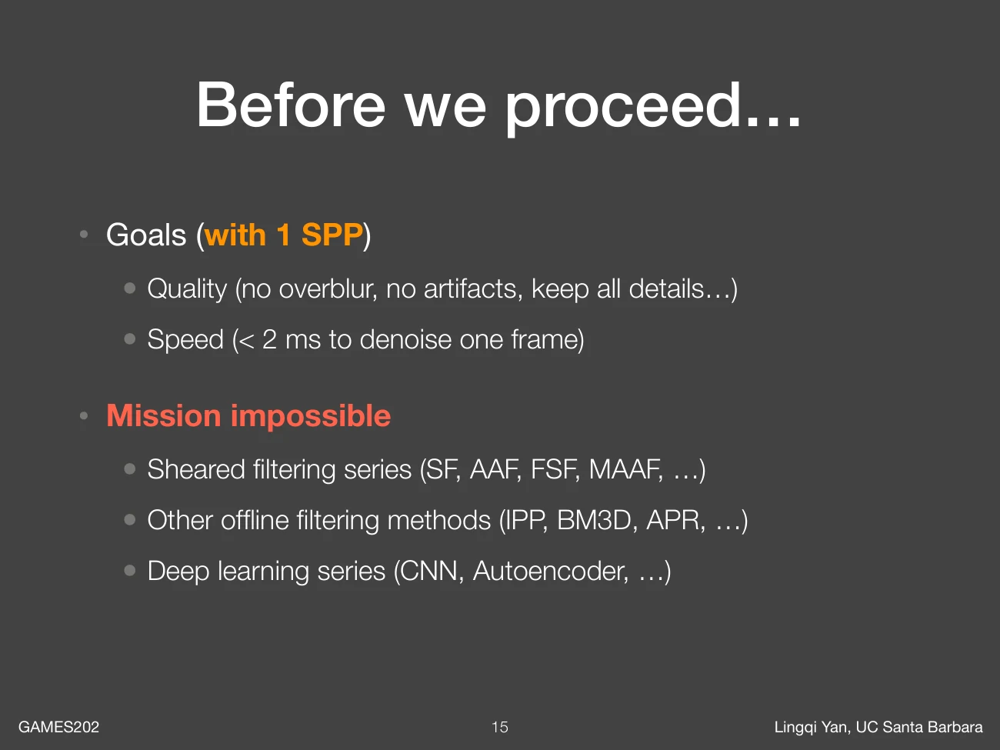
常见坑
误以为提高 SPP 就能解决问题 → 实时渲染的算力预算根本不允许高 SPP → 必须依赖降噪，而不是堆采样。
把降噪当成简单的模糊 → 简单模糊会丢失细节、产生过模糊（overblur）→ 需要利用 G-Buffer 等辅助信息做引导滤波。
UE / Unity 落地
UE5 的 Lumen 在光线追踪模式下同样以极低采样率运行，依赖时域降噪（Temporal Super Resolution 等）来稳定画面。
Unity 的 HDRP 光线追踪也提供降噪选项（如 NVIDIA OptiX Denoiser 或时域降噪），原理与本讲一致。
022. 时域复用的核心思想：把上一帧的结果搬过来
时域复用的基本假设是：上一帧已经降噪好的结果，可以复用到当前帧。因为相邻两帧的画面变化通常很小，上一帧的像素值对当前帧仍然有参考价值。
具体做法是：对于当前帧的每个像素，找到它在上一帧中对应的位置（通过运动向量（motion vector）），然后把上一帧该位置已经降噪的结果与当前帧的带噪结果按权重混合。这样，当前帧的像素就“继承”了上一帧的采样信息，等效于增加了采样数（SPP）。
课件给出的混合公式为： \[ \bar{C}^{(i)} = \alpha \, \tilde{C}^{(i)} + (1-\alpha)\, C^{(i-1)} \] 其中 \(\tilde{C}^{(i)}\) 是当前帧未滤波的结果，\(C^{(i-1)}\) 是上一帧滤波后的结果，\(\alpha\) 是混合权重（通常取 0.1~0.2 左右）。
这个思想与时域抗锯齿（TAA, Temporal Anti-Aliasing）非常相似，课件也明确指出时域累积受 TAA 启发。
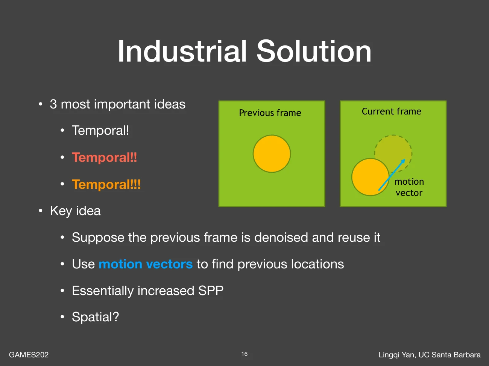
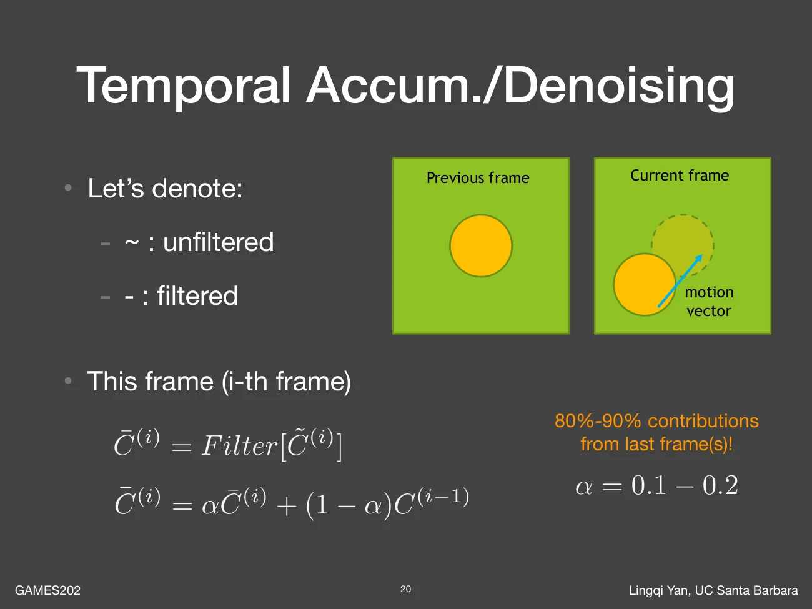
常见坑
α 取值过大 → 当前帧贡献过多，降噪效果差、噪声大 → 适当减小 α（如 0.1）让上一帧占主导。
α 取值过小 → 上一帧占主导，运动物体拖影严重 → 根据场景调整 α，或在失效时增大 α。
忘记处理运动向量 → 直接复用上一帧相同屏幕坐标 → 运动物体产生严重拖影。
UE / Unity 落地
UE 的 TAA 和 TSR 都使用类似的时域累积逻辑，运动向量由引擎自动生成（基于物体变换和骨骼）。
Unity 的 TAA 同样依赖运动向量，在 HDRP 中可调整抗锯齿的时域混合参数。
时域累积的伪代码（hlsl）
float3 currentColor = RayTraceCurrentFrame(uv);
float2 motion = GetMotionVector(uv);
float2 prevUV = uv - motion;
float3 prevColor = SamplePreviousFrame(prevUV);
float alpha = 0.1;
float3 result = alpha * currentColor + (1 - alpha) * prevColor;033. 反投影：找到上一帧的对应像素
时域复用的第一步是反投影（back projection）：给定当前帧像素 \(x_i\)，找到它在上一帧中的位置。
如果 G-Buffer 中存有世界坐标 \(s\)，可以直接用上一帧的视图投影矩阵把 \(s\) 投影到上一帧屏幕： \[ x' = P' V' M' s \] 其中 \(P', V', M'\) 分别是上一帧的投影、视图、模型矩阵。
如果没有世界坐标，但有深度值 \(z\)，可以先用当前帧的矩阵把像素反投影到世界空间，再用上一帧的矩阵投影回屏幕。课件提到，也可以利用运动向量 \(T\) 直接得到上一帧位置：\(s' = T s\)，然后 \(x' = P' V' M' s'\)。
G-Buffer（几何缓冲区）是渲染时“免费”获得的辅助信息，通常包含深度、法线、世界坐标、物体 ID 等，仅限屏幕空间信息。
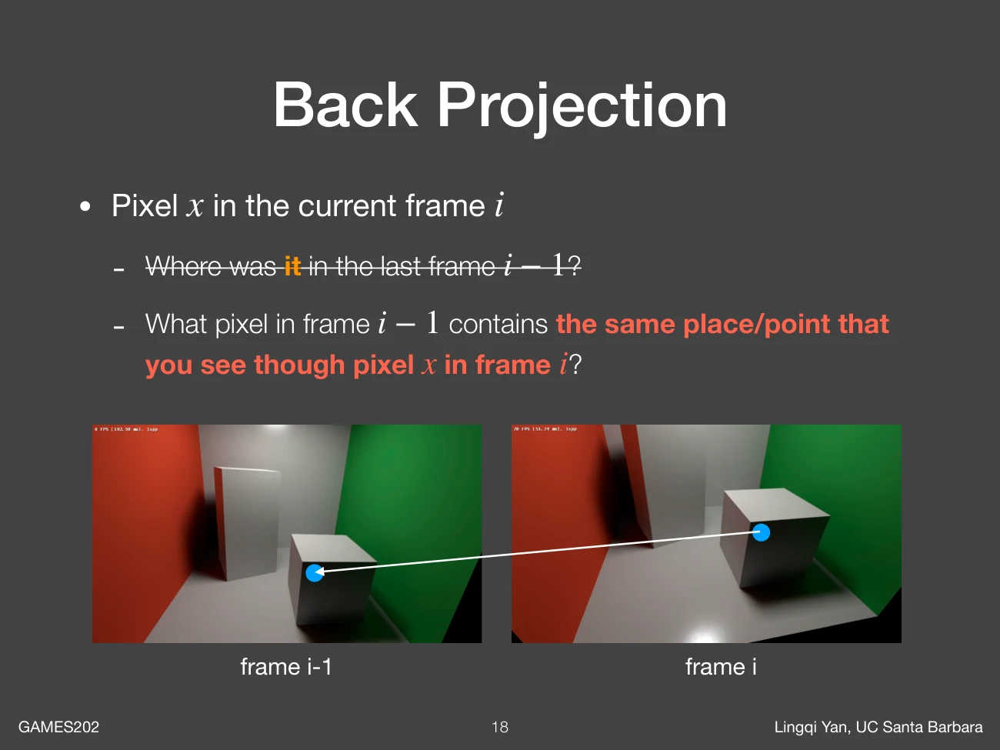
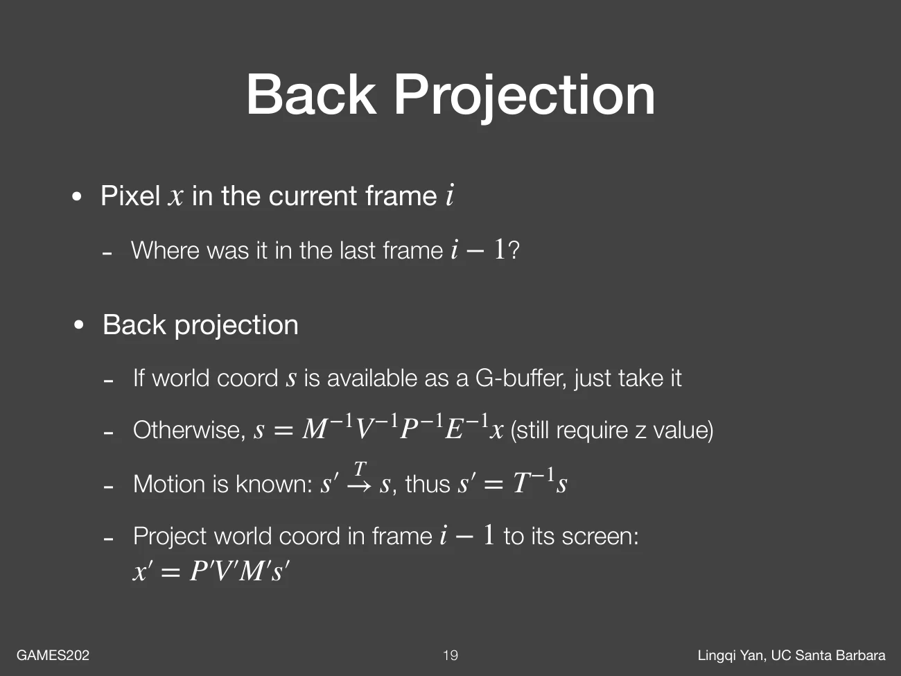
常见坑
运动向量方向搞反 → 用 uv + motion 而不是 uv - motion → 拖影方向错误。
深度值精度不足 → 反投影位置偏移 → 使用高精度深度缓冲或世界坐标 G-Buffer。
忽略相机运动 → 只考虑物体运动，相机移动时反投影错误 → 运动向量必须包含相机运动。
UE / Unity 落地
UE 的 G-Buffer 包含深度、法线、世界坐标等，可通过 SceneTexture 节点在材质中访问。
Unity 的 HDRP 提供 Motion Vector 渲染纹理，可用于自定义时域效果。
044. 时域失效的典型场景
时域复用并非总是有效。课件列举了几类典型失效场景：
- 切换场景：新场景没有上一帧信息，需要一段“预热期（burn-in period）”，期间画面噪声较大。
- 屏幕空间问题：例如在走廊中向后走，原本在屏幕外的物体进入视野，上一帧没有对应信息。
- 遮挡/新出现背景（disocclusion）：物体移开后露出的背景在上一帧被遮挡，没有历史信息。
- 着色相关的失效：移动光源产生的阴影、移动物体产生的光泽反射，其运动向量与物体本身不一致，导致阴影/反射滞后（detached/lagging shadows）。
如果无视这些失效、盲目复用上一帧，会产生滞后（lagging）伪影：运动物体拖着一条“尾巴”，或者阴影/反射跟不上物体。
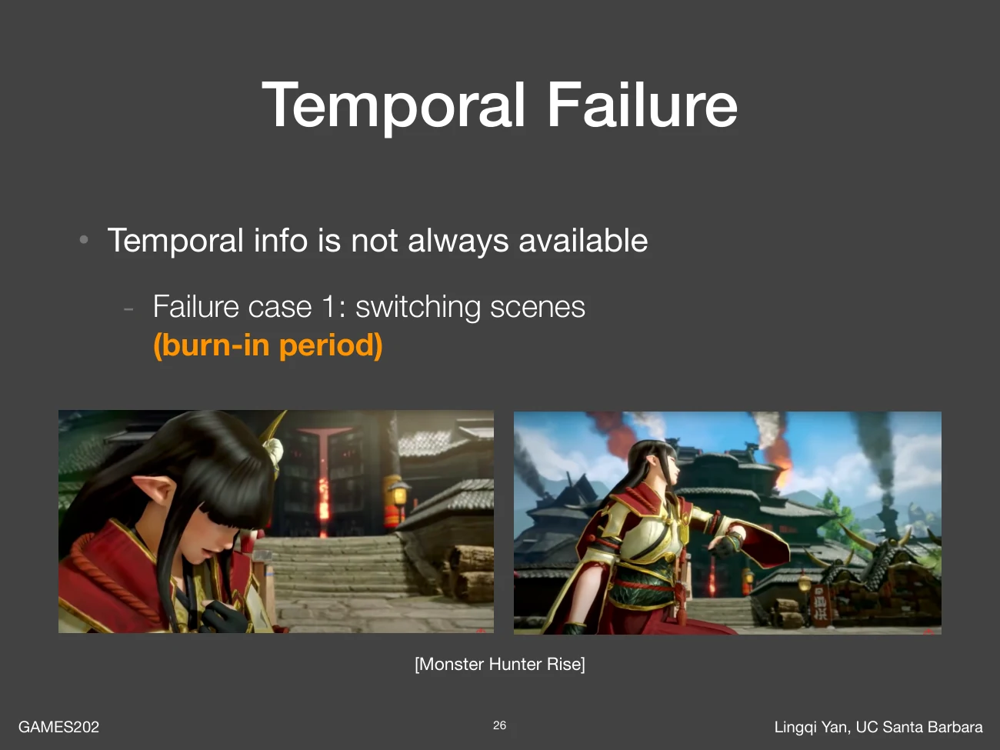
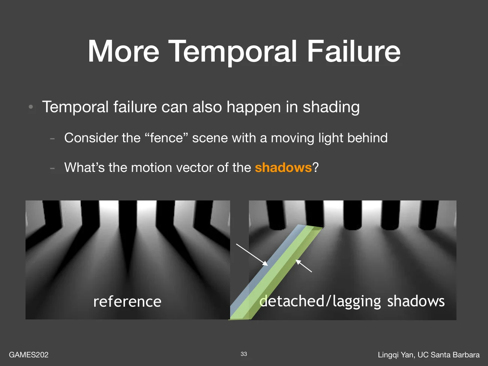
常见坑
认为运动向量只描述物体运动 → 阴影、反射、全局光照的运动向量可能不同 → 需要单独处理或使用更可靠的时域信息。
忽略 disocclusion → 新出现的背景区域直接复用上一帧被遮挡的像素 → 出现拖影或错误颜色 → 需要检测并降低 α。
UE / Unity 落地
UE 的 Lumen 在处理反射和全局光照时，同样面临时域失效问题，引擎内部有专门的检测和钳制机制。
Unity 的 HDRP 光线追踪降噪也提供类似的失效处理选项。
055. 缓解时域失效：钳制、检测与调整 α
面对时域失效，工业界常用的缓解手段有：
- 钳制（clamping）：把上一帧的颜色向当前帧的颜色范围钳制，避免历史值偏离太远。
- 检测（detection）：利用物体 ID、深度、法线等信息检测时域失效，然后调整 α（二值或连续）。
- 加强空域滤波：在失效区域增大空域滤波强度，弥补时域信息的不足。
但课件也指出，这些方法会重新引入噪声：因为失效区域本来就没有足够的历史样本，加强空域滤波又会导致模糊。这是一个权衡。
此外，课件提到作者所在团队的研究（Eurographics 论文《Temporally Reliable Motion Vectors for Real-time Ray Tracing》）专门研究如何进一步缓解时域失效。
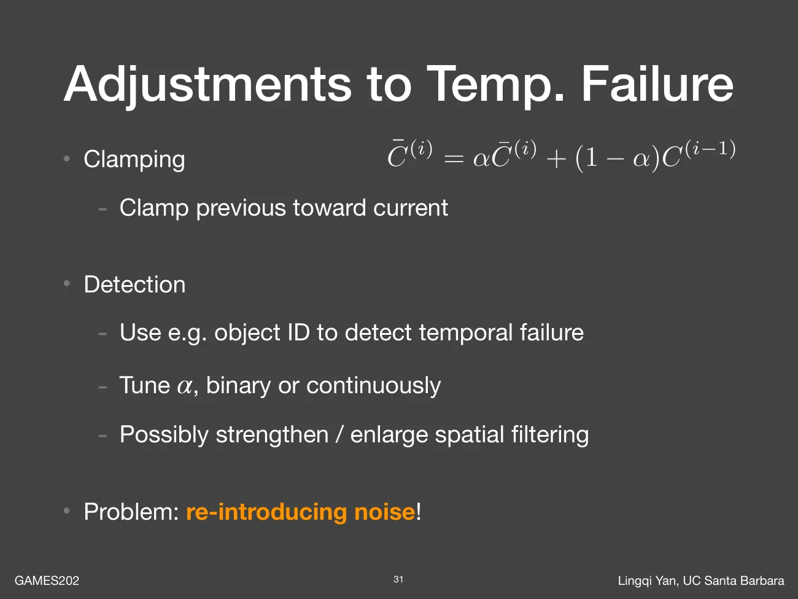
常见坑
钳制过强 → 历史信息被过度丢弃，降噪效果下降 → 根据场景调整钳制范围。
检测阈值过松 → 失效区域未被识别，拖影残留 → 结合多种 G-Buffer 信息检测。
UE / Unity 落地
UE 的 TAA 提供“历史权重”等参数，可间接调整时域混合的强度。
Unity 的 TAA 也有类似的历史钳制选项。
066. 从时域到空域：下一讲的铺垫
时域复用解决了大部分降噪问题，但当前帧本身仍然需要空域滤波（spatial filtering）来进一步降噪。课件指出，下一讲将介绍空域降噪技术，包括：
- 双边滤波（bilateral filter）：在空间邻域内加权平均，权重同时考虑空间距离和颜色差异。
- 联合双边滤波（joint bilateral filter）：利用 G-Buffer 中的法线、深度、物体 ID 等辅助信息引导滤波，避免跨边缘模糊。
- 时空方差引导滤波（SVGF, Spatiotemporal Variance-Guided Filtering）：结合时域与空域，利用方差估计引导滤波强度。
课件强调，空域滤波需要“考虑更多信息”，G-Buffer 提供的法线、深度、物体 ID 等正是关键。
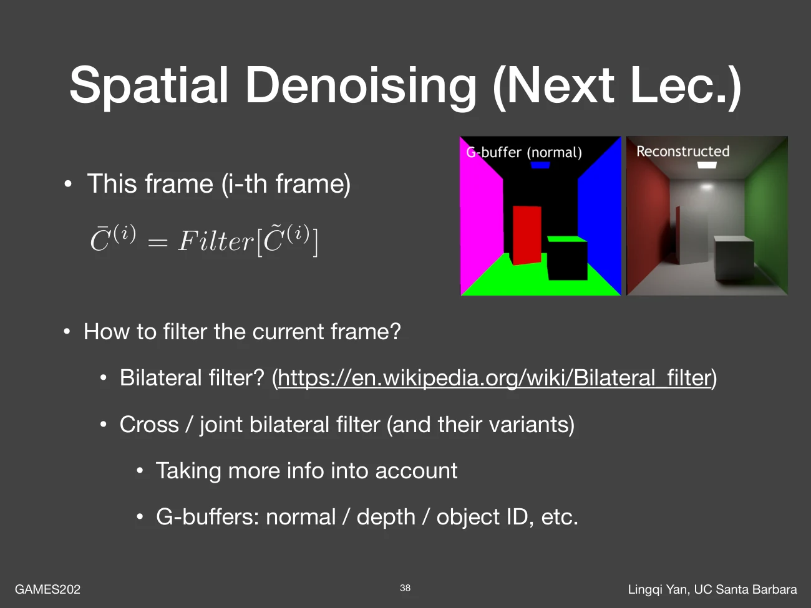
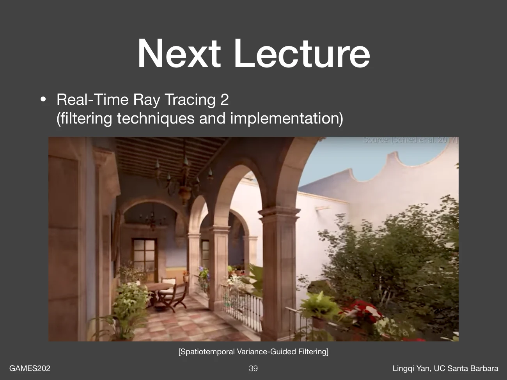
常见坑
双边滤波只考虑颜色 → 跨边缘模糊 → 必须结合法线/深度等 G-Buffer 信息。
空域滤波半径过大 → 过模糊 → 根据方差自适应调整滤波强度。
UE / Unity 落地
UE 的降噪管线结合了时域与空域滤波，具体实现可参考引擎源码中的 Denoiser 模块。
Unity 的 HDRP 光线追踪降噪也采用类似策略。
引擎对照表
| 概念 / 效果 | Unreal Engine | Unity |
|---|---|---|
时域累积 | TAA/TSR 的时域混合 | TAA 的时域混合 |
运动向量 | 自动生成，可通过材质节点访问 | Motion Vector 渲染纹理 |
G-Buffer | SceneTexture 节点访问深度/法线等 | HDRP 的 G-Buffer 纹理 |
降噪 | Lumen 内置时域降噪 | HDRP 光线追踪降噪 |
时域失效处理 | 历史钳制、失效检测 | 类似机制 |
术语双语表
| English | 中文 | 说明 |
|---|---|---|
| RTRT | 实时渲染中的光线追踪 | Real-Time Ray Tracing，以极低采样率渲染并降噪 |
| SPP | 每像素采样数 | Samples Per Pixel，实时中通常只有 1 |
| Denoising | 降噪 | 去除低采样率渲染产生的噪声 |
| Motion Vector | 运动向量 | 描述像素从上一帧到当前帧的屏幕空间位移 |
| Back Projection | 反投影 | 把当前帧像素映射回上一帧屏幕位置 |
| Temporal Accumulation | 时域累积 | 混合多帧结果以提高有效采样率 |
| G-Buffer | 几何缓冲区 | 渲染时免费获得的深度、法线、世界坐标等辅助信息 |
| Disocclusion | 遮挡解除 | 物体移开后露出的背景区域，缺乏历史信息 |
| TAA | 时域抗锯齿 | Temporal Anti-Aliasing，时域累积思想的来源 |
| SVGF | 时空方差引导滤波 | Spatiotemporal Variance-Guided Filtering，下一讲内容 |
课后练习
01 为什么实时渲染中的光线追踪必须依赖降噪？
查看答案
提示：
考虑采样数与噪声的关系。
实时渲染中每像素每帧只能承担约 1 个采样（1 SPP），路径追踪结果噪声极大，无法直接使用。必须通过降噪技术去除噪声，才能在可接受的画质下实时渲染。
02 写出时域累积的混合公式，并解释 α 的作用。
查看答案
提示：
参考课件中的公式。
公式：\[ \bar{C}^{(i)} = \alpha \tilde{C}^{(i)} + (1-\alpha) C^{(i-1)} \]。α 控制当前帧与上一帧的混合比例：α 越大，当前帧贡献越多，降噪效果越弱但滞后越少；α 越小，上一帧占主导，降噪效果好但运动物体容易拖影。
03 列举三种时域复用的失效场景，并说明如何缓解。
查看答案
提示：
从场景切换、屏幕空间、遮挡、阴影/反射滞后等角度考虑。
1) 切换场景：没有上一帧信息，出现预热期噪声，可增大 α 或加强空域滤波；2) 遮挡解除（disocclusion）：新出现背景无历史信息，可通过检测降低 α；3) 阴影/反射滞后：运动向量与物体不一致，可使用更可靠的时域信息或检测机制。
04 反投影时如果只有深度值而没有世界坐标，如何找到上一帧的对应像素？
查看答案
提示：
利用当前帧和上一帧的矩阵。
先用当前帧的投影、视图、模型矩阵的逆矩阵把像素反投影到世界空间，得到世界坐标，再用上一帧的投影、视图、模型矩阵把世界坐标投影到上一帧屏幕，得到对应像素位置。
05 在 UE 或 Unity 中，如何访问 G-Buffer 信息用于自定义降噪？
查看答案
提示：
考虑引擎提供的节点或纹理。
在 UE 中，可以通过材质编辑器的 SceneTexture 节点访问深度、法线、世界坐标等 G-Buffer 信息；在 Unity HDRP 中，可以通过 Custom Pass 或 Shader Graph 访问 G-Buffer 纹理（如深度、法线、运动向量）。